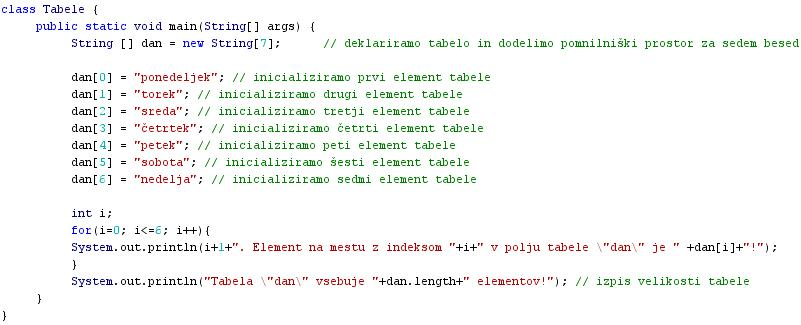
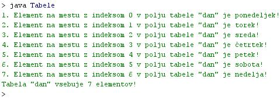

- Tabele ali veèkratne vrednosti so spremenljivke, ki lahko pod istim imenom privzamejo veè razliènih vrednosti.
- Primer: spremenljivka z imenom "dan" lahko zavzame sedem razliènih vrednosti. Te so ponedeljek, torek, sreda, èetrtek, petek, sobota in nedelja.
- Vsako vrednost spremenljivke dan lahko zapišemo tudi posebej: dan[0]=ponedeljek, dan[1]= torek, dan[2]=sreda, dan[3]=èetrtek, dan[4]=petek, dan[6]=sobota, dan[7]=nedelja.
- Vse vrednosti spremenljivke "dan" imajo ime "dan".
- Med seboj se loèijo vrednosti spremenljivke "dan" le po številu v oglatem oklepaju [].
- To število v oglatem oklepaju imenujemo kazalec, saj nam pokaže, katera konkretna vrednost spremenljivke "dan" izmed veè razpoložljivih nas zanima.
- Kazalec se po latinsko imenuje tudi indeks. Indeks je tudi najbolj pogosta oznaka za število v oklepaju imena tabele.
- Tabele zato pogosto imenujemo tudi indeksirane spremenljivke.

- Najpogostejše situacije, ko je uporaba tabel zelo primerna:
- kadar želimo shraniti veè podatkov iste vrste (imena dni, mesecev, osebna imena...)
- kadar želimo obdelati veèje število podatkov na enak naèin
- Indeks tabele zavzame vrednosti od 0 do n-1. n je število elementov tabele.
- Èe vsebuje tabela 7 elementov, velja: n-1=7-1=6. Indeksi torej teèejo od 0 do 6.
- Pri deklariranju ali napovedi spremeljivke v obliki tabele moramo podati torej veè podatkov:
- podatkovni tip posameznega elementa tabele (za tabelo "dan[]" je to niz, saj gre za imena dni)
- ime tabele (za tabelo "dan[]" je to "dan")
- število elementov tabele (za tabelo "dan[]" je to število 7, saj ima teden 7 dni)
- V javi lahko rezerviramo prostor v pomnilniku za tabelo šele potem, ko poznamo velikost tabele, torej število elementov.
- Spreminjanje velikosti tabele potem, ko smo jo že deklarirali, ni veè mogoèe.
- Velikost tabele je odvisna od števila elementov, ki jih tabela vsebuje.
- V Javi imamo na voljo metodo, s katero lahko ugotovimo število elementov, ki jih tabela vsebuje.
- Ta metoda se imenuje "length".
- Angleška beseda "length" pomeni dolžina. Ta lastnost je torej dolžina tabele.
- V okolju za pisanje izvorne kode v jeziku Java, za prevajanje in za interaktivno delo zapiši zgornji program "Tabele". Pomagaj si s sliko.
- Kodo lahko tudi kopiraš iz te datoteke in jo prilepiš v okolje, v katerem pišeš programèke. Pozor: koda, ki jo boš kopiral/a, vsebuje eno, dve, tri ali štiri napake. Èe želiš, da bo program deloval, moraš napake odkriti in jih odpraviti.
- Izvorno kodo shrani pod imenom "ImePriimek28.java". ImePriimek je seveda tvoje lastno ime in priimek.
- Datoteko "ImePriimek28.java" prevedi.
- Prevedeno datoteko zaženi, preveri rezultat v interaktivnem oknu in poklièi profesorja, da vidi rezultat.
1. Kaj je tabela?
2. Kaj je indeks tabele?
3. Kdaj so tabele še posebej praktiène za uporabo?
4. Kako se imenuje tabela, ki smo jo izdelali v vaji te uène enote?
5. Koliko elementov ima tabela, ki smo jo izdelali v vaji te uène enote?
6. Katero zanko smo uporabili v vaji te uène enote?
7. Kako je oznaèen indeks tabele v zanki te uène enote?
8. Kolikšna je zaèetna vrednost in kolikšna je konèna vrednost indeksa v vaji te uène enote?
9. Kakšna je naloga zanke, ki smo jo uporabili v vaji te uène enote?
10. Zapiši lastnost oziroma metodo, ki vrne velikost tabele.
2. Zapiši od ene do pet kljuènih besed, ki povzemajo vsebino te uène enote.
3. Povezave do dodatnih informacij.
Gradiva na spletnih straneh fakultete za matematiko in fiziko v Ljubljani.
Spletni priroènik proizvajalca programskega okolja Java. To je podjetje Sun.